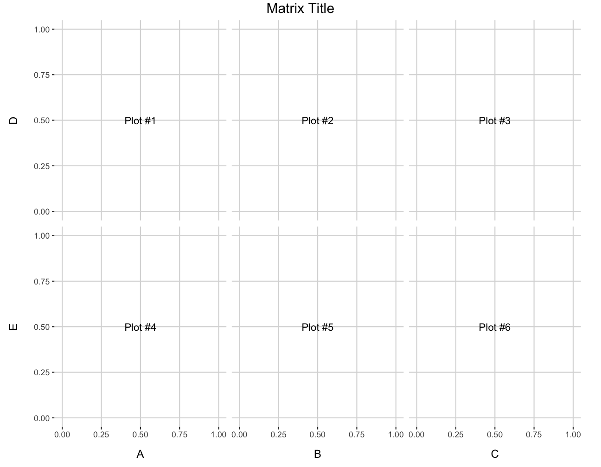
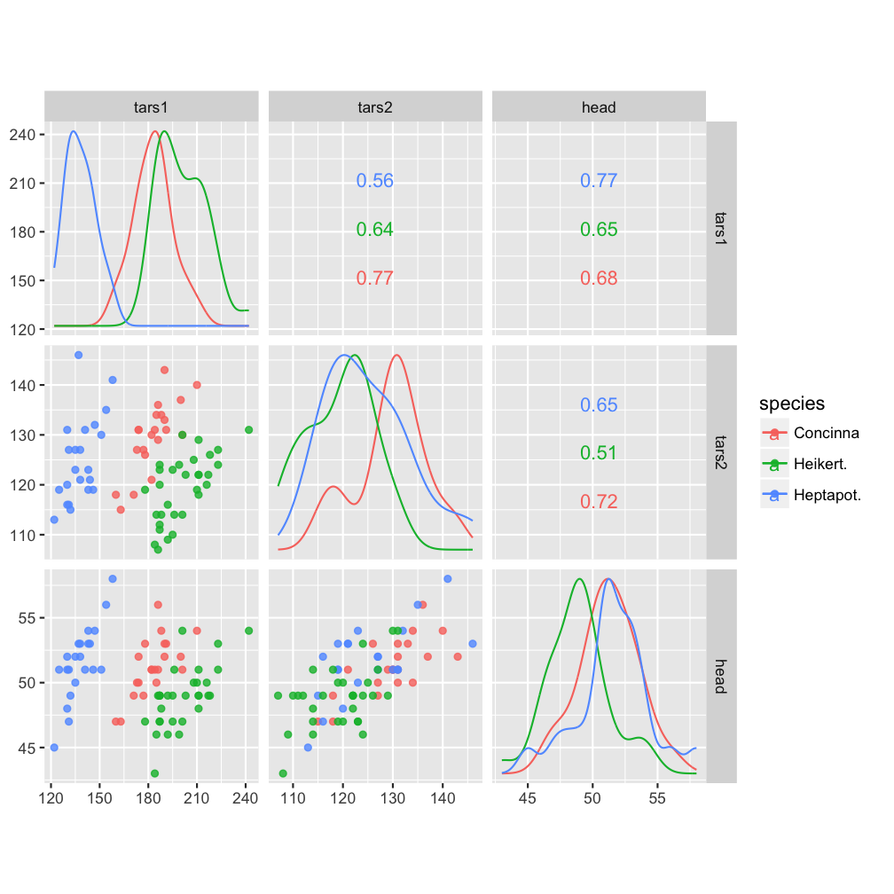

ggcoef · Plot model coefficients with broom and ggplot2

ggcorr · Correlation matrices with ggplot2

ggmatrix · Plot matrices with ggplot2 
ggnet2 · Network visualization with ggplot2

ggnetworkmap · Network maps with ggplot2

ggpairs · Pairwise plot matrices with ggplot2

ggscatmat · Numeric pairwise plot matrices with ggplot2 